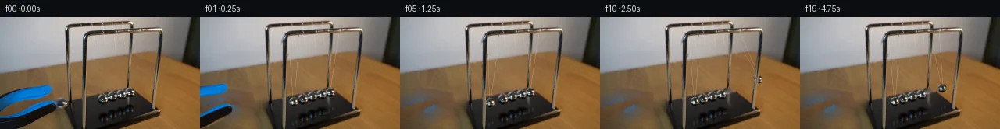

![首帧]()

Round 00
2026-11-05T17:24:34.819333+00:00像素候选变化代码 +225/−0inspection 更新
pixels f253f824e54f3f14 · code 79bcb82dc31d5f36
查看本轮 generate.py 真实 diff
--- previous/generate.py
+++ current/generate.py
@@ -0,0 +1,225 @@
+"""Photograph-based, local-pixel Newton's cradle continuation; no external assets."""
+from pathlib import Path
+import math
+import numpy as np
+from PIL import Image, ImageDraw, ImageFilter
+import cv2
+from scipy.ndimage import gaussian_filter, binary_dilation
+from scipy.sparse import lil_matrix
+from scipy.sparse.linalg import spsolve
+from artifact_io import save
+
+ROOT=Path(__file__).resolve().parent
+TMP=ROOT/'.tmp'; TMP.mkdir(exist_ok=True)
+SRC=np.array(Image.open(ROOT/'first_frame.png').convert('RGB'))
+H,W=SRC.shape[:2]
+S=4
+YY,XX=np.mgrid[:H,:W]
+
+def polygon(points, scale=1):
+ im=Image.new('L',(W*scale,H*scale))
+ ImageDraw.Draw(im).polygon([(round(x*scale),round(y*scale)) for x,y in points],fill=255)
+ if scale!=1: im=im.resize((W,H),Image.Resampling.LANCZOS)
+ return np.array(im)/255.
+
+def line_mask(segments,width=1):
+ im=Image.new('L',(W*S,H*S)); d=ImageDraw.Draw(im)
+ for a,b in segments:d.line((a[0]*S,a[1]*S,b[0]*S,b[1]*S),fill=255,width=round(width*S))
+ return np.array(im.resize((W,H),Image.Resampling.LANCZOS))/255.
+
+upper=polygon([(0,101),(12,96),(29,91),(48,89),(62,87),(65,87.5),(66.5,90),(66.5,94),(64,97.5),(57,100.5),(43,103),(25,105),(12,110),(0,120)],S)
+lower=polygon([(0,127.5),(11,127.5),(22,126),(34,121),(48,113),(58,109),(64,107.5),(68.5,108.5),(72,111),(73,115),(71,120),(66,125),(56,131),(41,138),(25,143.5),(0,147)],S)
+tool=np.maximum(upper,lower)
+held=((XX-79.4)**2/8.3**2+(YY-110.2)**2/7.7**2<1)
+repair=binary_dilation((tool>.015)|held,iterations=2)
+# The table repair ends before the untouched rear support.
+repair &= XX<87
+
+# A real tabletop patch contributes grain. Fit only visible table, then solve
+# a harmonic boundary correction so the hidden area meets its photographed rim.
+visible=(YY>72-.12*XX)&(XX<84)&(~binary_dilation(repair,iterations=2))
+visible|=(XX>211)&(YY>65)&(YY<143)
+visible|=(XX>92)&(XX<104)&(YY>68)&(YY<95)
+x=XX/W; y=YY/H
+features=np.stack([np.ones_like(x),x,y,x*x,x*y,y*y],axis=-1)
+coefs=np.linalg.lstsq(features[visible],gaussian_filter(SRC.astype(float),(2,2,0))[visible],rcond=None)[0]
+lighting=features@coefs
+smooth=gaussian_filter(SRC.astype(float),(3,3,0))
+residual=SRC.astype(float)-smooth
+mapx=(215+.43*XX).astype(np.float32)
+mapy=(68+.91*(YY-86)+.05*XX).astype(np.float32)
+grain=cv2.remap(residual.astype(np.float32),mapx,mapy,cv2.INTER_CUBIC,borderMode=cv2.BORDER_REFLECT_101)
+candidate=np.clip(lighting+grain*.85,0,255)
+coords=np.argwhere(repair); ids=np.full((H,W),-1,int)
+ids[repair]=np.arange(len(coords)); A=lil_matrix((len(coords),len(coords)))
+b=np.zeros((len(coords),3))
+for i,(py,px) in enumerate(coords):
+ degree=0
+ for dy,dx in [(0,1),(0,-1),(1,0),(-1,0)]:
+ ny,nx=py+dy,px+dx
+ if 0<=ny<H and 0<=nx<W:
+ degree+=1
+ if repair[ny,nx]: A[i,ids[ny,nx]]=-1
+ else:b[i]+=SRC[ny,nx].astype(float)-candidate[ny,nx]
+ A[i,i]=degree
+correction=spsolve(A.tocsr(),b)
+plate=SRC.astype(float).copy();plate[repair]=np.clip(candidate[repair]+correction,0,255)
+
+# Fixed frame silhouettes keep chrome untouched during thread restoration.
+rear=line_mask([((86,14),(89,118)),((168,10),(165,91)),((88,10),(167,7))],3.2)
+front=line_mask([((108.5,25),(107.1,143)),((205,19),(198.4,119)),((111,21),(203,16))],3.4)
+fixed=np.maximum(rear,front)>.08
+# Thin original moving strings and the right-end sphere/reflection are removed.
+threadmask=line_mask([((112,9),(79.4,110.2)),((128,20),(79.4,110.2)),((164,8),(166.3,96.3)),((178,18),(166.3,96.3))],1.2)>.08
+threadmask &= ~fixed
+threadmask &= ~(YY<22)
+rightball=((XX-166.3)**2/7.1**2+(YY-96.3)**2/7.3**2<1)
+reflection=((XX-165.8)**2/7.5**2+(YY-119)**2/10.1**2<1)
+central=np.zeros((H,W),bool)
+for cx,cy in [(132.5,105.1),(143.9,102.1),(155.1,99.1)]:
+ central|=((XX-cx)**2+(YY-cy)**2<6.4**2)
+smallmask=(threadmask|rightball|reflection)&(~central)
+smallmask &= ~((rear>.1)&(YY<91))
+plate=cv2.inpaint(np.uint8(np.clip(plate,0,255)),np.uint8(smallmask)*255,3,cv2.INPAINT_TELEA).astype(float)
+# Preserve support pixels. The removed sphere sits below the rear support.
+plate[fixed&~rightball]=SRC[fixed&~rightball]
+Image.fromarray(np.uint8(plate)).save(TMP/'clean_plate.png')
+
… diff truncated; 138 more lines …